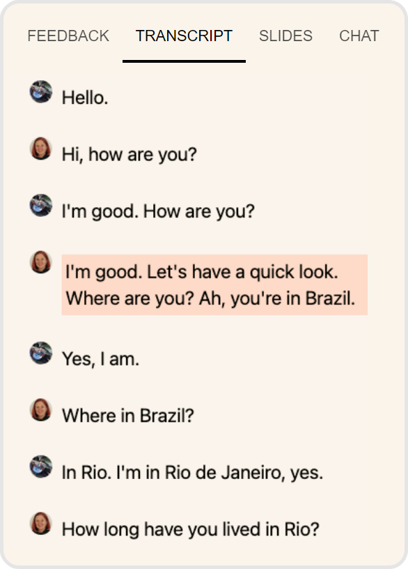

Cambly 从试课到稳定用：一篇带新手走完整个上手流程的实战指南
从零开始注册、1美元试课、选外教、上课、管续费开关——所有容易踩坑的地方提前告诉你。
这篇教程读完，你就能自己完成 Cambly 的注册、试课、第一次正式上课，并且在订阅管理上不踩任何常见的坑。
准备工作
你需要一台能稳定视频通话的设备（电脑或手机都行，网络摄像头和麦克风别忘开权限），以及一个邮箱账号用来注册——Google、Apple 或 Facebook 登录也可以，邮箱是最干净的方式，不用为了一个英语学习 App 绑上所有社交账号。
Cambly 的客户端覆盖网页端、iOS 和 Android。网页端打开浏览器直接用就行，移动端可以在 App Store 或 Google Play 装官方应用。移动端有一个好处：预约上课和收到外教回复的推送更及时，不会错过约好的时间。
第一步：注册与水平测试
打开官网或启动应用，第一眼看到的就是注册入口。邮箱注册只需填地址和密码，验证邮件点一下就完成。接下来会弹出一组 5~6 个问题：你的英语水平大概在哪档（从「只会几个单词」到「母语流利」）、主要学习目标（出国、职场、日常交流、考试备考）、以及对哪些话题感兴趣（科技、旅行、影视、商务……）。
别急着随便选——这组问题的结果直接决定系统给你推荐哪一批外教。它不是考试，没有对错，但填得越具体，匹配到的老师就越对路。比如你说「职场商务」，系统就不会把专攻雅思口语的外教排在最前面。
填完之后进入首页，这时你已经可以浏览外教列表了，但还上不了课——得先有一节课的额度。
第二步：1 美元试课，30 分钟验证值不值
Cambly 给新用户准备了 1 美元试课，30 分钟，任选一位母语外教。这不是缩水的演示课，就是一节完整的一对一视频课——唯一的目的是让你在掏钱订阅之前，感受真人开口说英语到底是什么感觉。
试课购买四步走：
- 选好刚才注册的账号，在首页或外教详情页找到「1 美元试课」按钮。
- 回到外教列表，挑一位你感兴趣的老师——可以看他们的自我介绍视频、学生评价和上课话题标签。
- 选上课时间：想马上开始就选「I'm ready」即时通话；想提前安排就选一个未来的具体日期和时段。
- 结算付款，填信用卡或 PayPal 信息，确认支付 1 美元。
付款成功后，系统会根据你选的上课方式把你引导到课堂入口。即时通话的话，几秒之内就能接到外教的视频邀请；预约的话，到点前 10 分钟应用会推通知提醒你。
第三步：进入课堂，真实对话
点击进入课堂之后，先花 10 秒钟检查画面和声音——摄像头别对着天花板，麦克风别被遮住。外教那边也在等，一切正常的话他们会先开口打招呼，不用紧张，这是真人，不是录音。
课堂里有几个实用的小功能：右下角可以切换摄像头开关（聊到一半想低头查个单词不想让画面变黑），底部有一个「请求纠正」按钮——你说完一段之后觉得不确定语法对不对，点一下，外教会专门针对刚才那句给出反馈。
整节课准点开始、准点结束。约了晚上八点，八点半就是终点，迟到了不补时——这是硬规则。如果你知道自己会迟到超过 10 分钟或者根本赶不上，提前点课程详情里的「Reschedule（改期）」换一个时段，别白白烧掉一节课。
第四步：课后看反馈，第一次正式选课
试课结束后 24 小时内，系统会把这节课的录像和外教的书面反馈推送给你——通常是一段文字总结你这节课聊了什么、哪些表达用得好、哪些地方有语法或发音的改进空间。这个反馈很有用，别跳过，它比你自己在对话时记笔记要完整得多。
如果试完觉得合适，下一步就是选一个付费套餐。这里有三档：Private（一对一私教）、Small Groups（最多 3 人小组课）和 Pro（最高级，含更多专属功能）。选套餐的时候别光看价格，先算一算你每周能稳定拿出多少时间上课——因为套餐的分钟池是按周刷新的，买多了用不完就是浪费。
决定订阅之后，安装包从官方下载拿到手，跟着引导走就行。网页端注册好的账号在移动端直接登录，进度和套餐状态完全同步。
第五步：管理你的续费开关——别为不用的周期买单
这是很多新手最容易掉的坑：买了年付套餐，用了三个月觉得不适合想退，结果取消的时候才发现长期折扣作废了，按标准月价折算下来能退回的钱比想象中少很多。
记住这条原则：不续费和退款是两条不同的路。
如果你只是觉得「暂时不想上了，但以后可能还会回来」，最优策略是关闭自动续费，而不是申请退款。关闭续费的效果是：当前周期照常使用到期满，之后不再扣款——不是立刻停权。具体操作：账户设置里找到「Turn renewal off」，点一下就好，本周期内的权益一点不受影响。
想彻底取消申请退款的话，得知道那个核心算法：你付的是含折扣的周期价（比如年付 30% off），提前取消 = 长期折扣作废，已用天数改按标准月价计费。退款金额 = 实付金额 −（已用天数 × 标准月价折算的日费）。折扣是给「留在未来」的你的，不是给过去的。所以如果已经用了大半年，折扣作废的惩罚可能吃掉大部分退款——这时更优选择往往是把周期用完，或者考虑暂停套餐（能顺延周期）而不是直接取消——暂停的具体设置和退款的细节公式可以翻一翻Cambly文档。
关闭续费的最佳时机是到期前任意时点，三分钟的事。订阅之后立刻在日历上给到期日前 3 天设个提醒，写「检查是否继续订阅」——这是一个防惯性扣款的好习惯。
三个新手最容易翻车的地方
卡点一：App Store/Google Play 订阅找不到续费开关
如果你是通过商店渠道订阅的，续费开关不在 Cambly 应用里。App Store 用户要打开「设置 → Apple ID → 订阅」找到 Cambly；Google Play 用户要进 Play 商店的「付款和订阅」里找。很多人卸载了应用以为就关了续费，结果商店还在自动扣款。
卡点二：外教没出现或者连接断了
别硬扛。如果外教超过 5 分钟没进课堂，或者中途连接断了导致课程无法继续，直接在应用内点「Report an issue（报告问题）」说明情况。系统核实后会给你补一节课的额度，通常很快到账。
卡点三：年付 vs 月付的选择焦虑
不确定能不能坚持的话，先用 1 美元试课 + 月付验证。月付本身就是标准价，取消的话按天算很公平。年付折扣看起来很诱人，但折扣作废的条款在你想退的时候真的会咬你一口。把「能不能坚持」这件事先在月付周期里想清楚，再决定要不要升级。

往下还能玩什么
基础流程走通之后，你会发现 Cambly 不只是一个「找外教聊天」的工具。Private+ 和 Pro 档课后有系统生成的课间练习——基于你课堂里聊过的内容自动匹配发音、词汇和语法活动；小组课最多 3 人一起，围绕某个话题自由讨论，比一对一的对话节奏更有弹性；还有按水平分级的阅读材料可以在课间练阅读。
很多学习者的组合是：背单词类 App 攒词汇，Cambly 把词汇「激活」成口语输出。两者不互斥，反而互补。
这套资料在三个仓库都能拿到，GitHub 放了完整的源文件和分类索引，Gitee 和 GitCode 各有一份镜像——国内网络环境下优先 GitCode，GitHub 适合境外用户和长期维护。